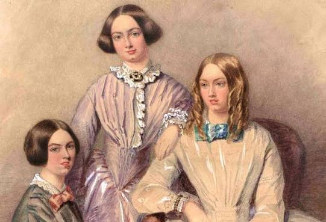

O apagamento histórico das mulheres na ciência e na cultura distorce a realidade,
fazendo parecer que a genialidade é um privilégio exclusivamente masculino.
Isso perpetua estereótipos de que mulheres são menos capazes em áreas técnicas
e científicas, afastando novas gerações de vocações nesses campos. Além disso,
priva a sociedade de referências fundamentais, enfraquecendo a diversidade de
perspectivas indispensável para a inovação e o avanço do conhecimento.
Rosalind Franklin foi uma brilhante química e cristalógrafa britânica cuja pesquisa com difração de raios X foi fundamental para decifrar a estrutura de dupla hélice do DNA. O célebre "Fotografia 51", obtido por ela e seu aluno Raymond Gosling, forneceu as evidências experimentais essenciais usadas sem seu consentimento por James Watson e Francis Crick. Apesar de seu papel crucial na descoberta, seu trabalho foi marginalizado em vida e não recebeu o devido reconhecimento na época. Hoje, ela é celebrada como uma das cientistas mais importantes do século XX e um símbolo da contribuição feminina para a ciência.
A astrofísica do Norte da Irlanda Jocelyn Bell Burnell descobriu os púlsares (estrelas de nêutrons) enquanto era estudante de pós-graduação. Ela foi a primeira pessoa a detectar e analisar os sinais de rádio emitidos por essas estrelas no universo. Apesar de ter sido a responsável direta pela observação e identificação do fenômeno, o Prêmio Nobel de Física de 1974 pela descoberta foi entregue apenas ao seu orientador, Antony Hewish, excluindo totalmente o nome de Jocelyn da premiação.
A consagrada autora J.K Rowling decidiu ingressar no gênero de ficção policial publicando a renomada série Cormoran Strike sob o pseudônimo masculino de Robert Galbraith. Essa escolha estratégica permitiu que seus romances fossem avaliados de maneira neutra e imparcial pela crítica e pelo público leitor. Ao esconder sua verdadeira identidade, ela buscou construir uma nova carreira literária sem o peso da fama mundial e das altíssimas expectativas geradas pelo sucesso estrondoso de Harry Potter. A experiência durou até que sua autoria fosse descoberta, mas consolidou o talento da escritora em um universo narrativo completamente diferente do que a consagrou.

Em meados do século XIX, as irmãs Brontë, escritoras britânicas, enfrentaram barreiras culturais e adotaram os pseudônimos masculinos de Currer, Ellis e Acton Bell para lançar suas obras. Elas escolheram nomes que mantivessem as iniciais originais de seus próprios nomes como uma forma sutil de preservar a identidade de cada uma. Sob essa fachada, publicaram romances que se tornaram clássicos absolutos da literatura mundial, como Jane Eyre, O Morro dos Ventos Uivantes e Agnes Grey. A estratégia garantiu que os livros fossem aceitos pelas editoras e lidos sem o forte preconceito literário que marginalizava autoras mulheres na sociedade vitoriana da época.
Estimar um número exato é impossível, pois ao longo dos séculos incontáveis mulheres tiveram suas contribuições ignoradas em diversas áreas, desde a ciência até as artes. Historiadores apontam que a grande maioria das pesquisadoras, inventoras e pensadoras da Antiguidade e da Era Moderna teve seu trabalho registrado sob pseudônimos masculinos ou atribuído a homens. Esse fenômeno sistemático, conhecido como "Efeito Matilda", afetou milhares de mentes brilhantes que foram apagadas dos registros oficiais. Portanto, o número real é incalculável e representa uma enorme perda de patrimônio histórico e cultural para a humanidade.